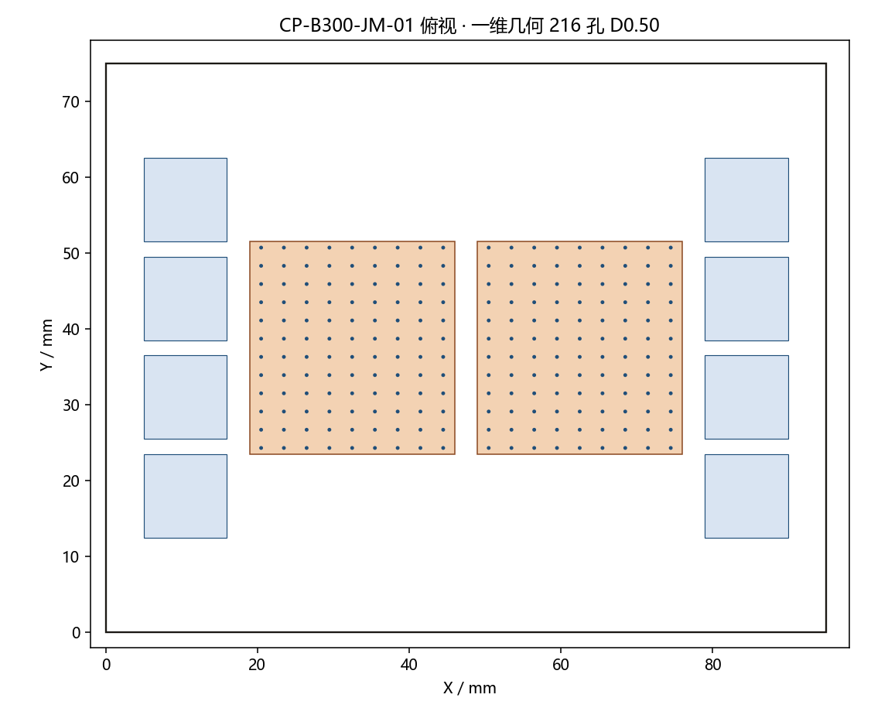
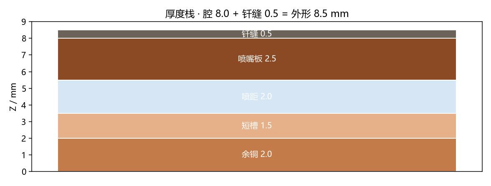

计算书由 make_cycle.py 调用 model.solve 生成。几何冻结在 model.py：板 95×75×8.5 mm，
每 die 9×12，两 die 共 216 孔，D=0.50 mm，Sx=3.0，Sy=2.4，H=2.0。


设计点
| DP-A 保证点 | DP-B 包络 | |
|---|---|---|
| 功率 / 流量 / 进液 | 1100 W · 2.0 L/min · 40 °C | 1400 W · 2.4 L/min · 40 °C |
| die / HBM / 其他 | 429.0 W×2 · 24.75 W×8 · 44.0 W | 546.0 W×2 · 31.50 W×8 · 56.0 W |
| 混合温升 | 7.96 K | 8.44 K |
| 孔速 / Re / 孔口压降（D=0.50） | 0.629 m/s · 478 · 0.35 kPa | 0.755 m/s · 573 · 0.51 kPa |
| 同一流量若孔径改为 0.40 | 0.982 m/s · Re 597 | 1.179 m/s · Re 717 |
| 壳–进液热阻 | 0.0326–0.0366 °C/W | 0.0311–0.0351 °C/W |
| 和目标比 | 下限 0.0326，上限 0.0366，目标 0.028 | 下限 0.0311，上限 0.0351，目标 0.025 |
| 板内压降区间 | 3.52–5.52 kPa | 3.71–5.71 kPa |
| HBM 槽速 | 0.463 m/s | 0.556 m/s |
Re 低于 2000，Martin 阵列式在 DP-A 上不采用。热阻上限来自短槽肋模型加 TIM2 = 0.008 °C/W。DP-A 施加到单孔 CFD 的热流是名义胞热流的 1.05 倍：57.928 W/cm²（579282 W/m²），流量不乘这 5%。

几何校核
| 项 | 式 | 计算 | 预期 |
|---|---|---|---|
| X 向链 | 5+11+0.5+2+0.5+27+3+27+0.5+2+0.5+11+5 | 95.000 | 95.000 |
| Y 向链 | 12.5+50+12.5 | 75.000 | 75.000 |
| 腔体厚度 | 2.0+1.5+2.0+2.5 | 8.000 | 8.000 |
| 射流中心距 X | (9-1)x3.0 | 24.000 | 24.000 |
| 射流中心距 Y | (12-1)x2.4 | 26.400 | 26.400 |
| 覆盖长度 X | 9x3.0 | 27.000 | 27.000 |
| 覆盖长度 Y | 12x2.4 | 28.800 | 28.800 |
| Y 向超出 die | 28.8-28 | 0.800 | 0.800 |
| Y 向板外包络 | 28+1.2 | 29.200 | 29.200 |
| 外包络余量 | 29.2-28.8 | 0.400 | 0.400 |
| 单 die 槽覆盖 | 35x0.8 | 28.000 | 28.000 |
Y 向射流覆盖比 die 高 0.8 mm，两侧各约 0.4 mm，孔本身仍落在 die 投影内。这是 model.py 写明的外包络，不是尺寸链错误。